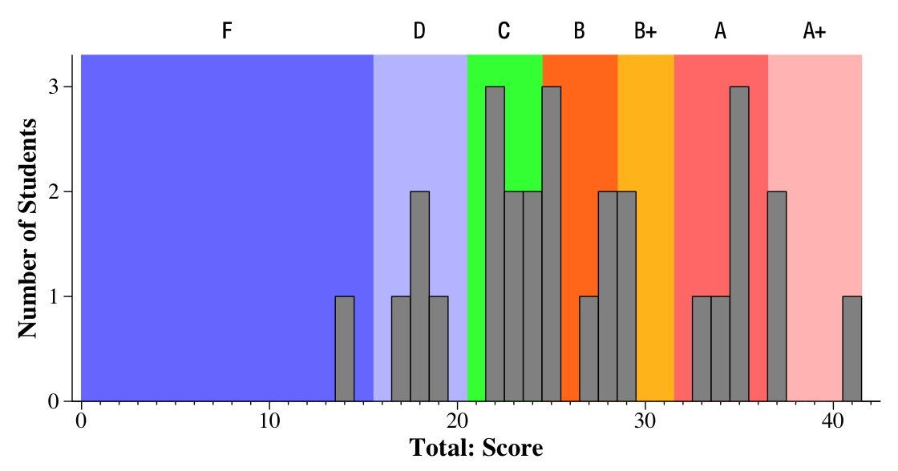
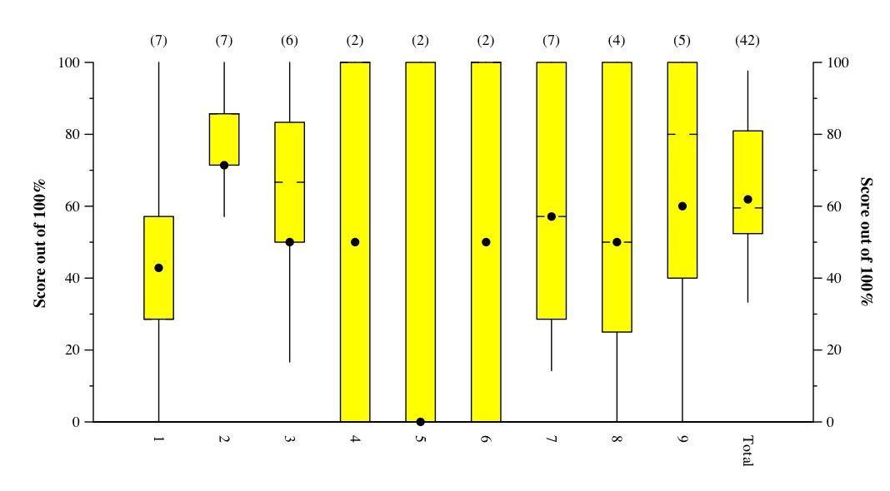

CS140 Final Exam -- December 10, 2007
Files
Comments
A challenging exam, to be sure. There is a huge cluster in the low B/high C range.
I'm not sure what that means.
- A+: 37 to 42. One student had a 41, absolutely nailing the exam - well done!
- A: 32 to 37
- B+: 29 to 32
- B: 25 to 29
- C: 21 to 25
- D: 16 to 21
- F: Below 16

Tukey Plots

This is a Tukey Plot, which has lines to the max and min, yellow box denoting
the 1st and 3rd quartiles, hash marks at the median, and dot at the mean.
In the "answers and grading", there are histograms of scores for each question.